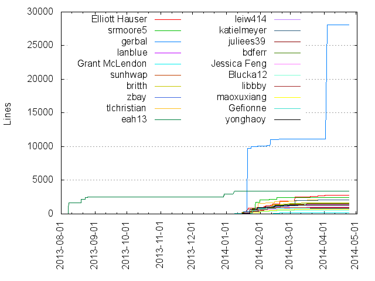
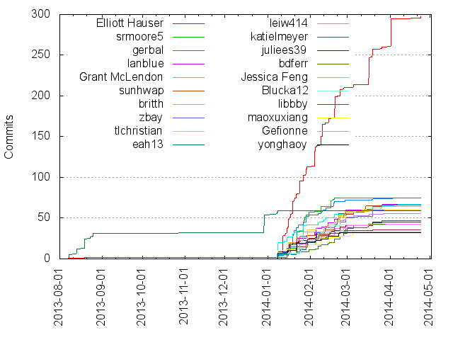

Authors
| Author | Commits (%) | + lines | - lines | First commit | Last commit | Age | Active days | # by commits |
|---|
| Elliott Hauser | 297 (17.68%) | 2811 | 680 | 2013-08-07 | 2014-04-24 | 259 days, 18:44:39 | 35 | 1 |
| srmoore5 | 75 (4.46%) | 2418 | 1896 | 2014-01-08 | 2014-02-19 | 42 days, 0:02:58 | 15 | 2 |
| gerbal | 75 (4.46%) | 28104 | 11094 | 2014-01-08 | 2014-04-04 | 85 days, 19:21:21 | 25 | 3 |
| lanblue | 67 (3.99%) | 1433 | 485 | 2014-01-15 | 2014-03-26 | 70 days, 10:03:43 | 15 | 4 |
| Grant McLendon | 67 (3.99%) | 194 | 196 | 2014-01-08 | 2014-04-09 | 91 days, 2:07:51 | 24 | 5 |
| sunhwap | 66 (3.93%) | 1519 | 723 | 2014-01-08 | 2014-03-26 | 77 days, 0:26:45 | 22 | 6 |
| britth | 64 (3.81%) | 1676 | 314 | 2014-01-08 | 2014-03-26 | 77 days, 0:14:26 | 16 | 7 |
| zbay | 60 (3.57%) | 1353 | 581 | 2014-01-08 | 2014-03-19 | 70 days, 10:22:40 | 18 | 8 |
| tlchristian | 60 (3.57%) | 2082 | 751 | 2014-01-08 | 2014-03-28 | 78 days, 21:21:11 | 15 | 9 |
| eah13 | 59 (3.51%) | 3397 | 1569 | 2013-08-07 | 2014-01-08 | 154 days, 5:49:29 | 8 | 10 |
| leiw414 | 56 (3.33%) | 1380 | 599 | 2014-01-14 | 2014-03-27 | 72 days, 4:31:27 | 17 | 11 |
| katielmeyer | 47 (2.80%) | 2068 | 449 | 2014-01-08 | 2014-03-26 | 76 days, 23:48:52 | 14 | 12 |
| juliees39 | 45 (2.68%) | 854 | 340 | 2014-01-08 | 2014-03-19 | 70 days, 1:40:12 | 15 | 13 |
| bdferr | 43 (2.56%) | 1571 | 467 | 2014-01-08 | 2014-03-16 | 66 days, 23:27:18 | 16 | 14 |
| Jessica Feng | 43 (2.56%) | 1083 | 118 | 2014-01-15 | 2014-03-29 | 73 days, 2:29:08 | 17 | 15 |
| Blucka12 | 42 (2.50%) | 554 | 254 | 2014-01-08 | 2014-02-23 | 45 days, 23:02:07 | 15 | 16 |
| libbby | 36 (2.14%) | 999 | 324 | 2014-01-08 | 2014-03-19 | 70 days, 1:43:55 | 10 | 17 |
| maoxuxiang | 33 (1.96%) | 698 | 122 | 2014-01-08 | 2014-03-04 | 55 days, 10:24:31 | 8 | 18 |
| Gefionne | 33 (1.96%) | 740 | 312 | 2014-01-08 | 2014-01-27 | 19 days, 6:22:51 | 4 | 19 |
| yonghaoy | 32 (1.90%) | 1270 | 459 | 2014-01-08 | 2014-02-23 | 46 days, 2:27:47 | 9 | 20 |
These didn't make it to the top: slaffer, Lasher09, agooch, Allen Lyons, jacobthill, Ethan Kavanaugh, Oak Ritchie, madeline13, Libby Livingston, Julie Seifert, jtbeeker, Xuxiang Mao, Adrian Ogletree, Mandy Gooch, yonghao, Sophia Lafferty-Hess, lyonsa, Sierra Moore, holtam, Madeline Coven, David Cowhig, babykav, elizahinkes, Allen, Thu-Mai Christian
Only top 20 authors shown
Only top 20 authors shown
| Month | Author | Commits (%) | Next top 5 | Number of authors |
|---|
| 2014-04 | Elliott Hauser | 36 (80.00% of 45) | jacobthill, Grant McLendon, gerbal, Oak Ritchie | 5 |
| 2014-03 | Elliott Hauser | 51 (28.65% of 178) | Xuxiang Mao, sunhwap, Libby Livingston, zbay, katielmeyer | 27 |
| 2014-02 | Elliott Hauser | 97 (15.42% of 629) | britth, lanblue, leiw414, zbay, bdferr | 39 |
| 2014-01 | Elliott Hauser | 111 (14.38% of 772) | srmoore5, gerbal, Grant McLendon, tlchristian, Gefionne | 34 |
| 2013-12 | eah13 | 23 (100.00% of 23) | | 1 |
| 2013-08 | eah13 | 31 (93.94% of 33) | Elliott Hauser | 2 |
| Year | Author | Commits (%) | Next top 5 | Number of authors |
|---|
| 2014 | Elliott Hauser | 295 (18.17% of 1624) | srmoore5, gerbal, lanblue, Grant McLendon, sunhwap | 45 |
| 2013 | eah13 | 54 (96.43% of 56) | Elliott Hauser | 2 |
| Domains | Total (%) |
|---|
| gmail.com | 553 (32.92%) |
|---|
| live.unc.edu | 394 (23.45%) |
|---|
| mac.com | 356 (21.19%) |
|---|
| unc.edu | 131 (7.80%) |
|---|
| email.unc.edu | 118 (7.02%) |
|---|
| msn.com | 66 (3.93%) |
|---|
| users.noreply.github.com | 62 (3.69%) |
|---|